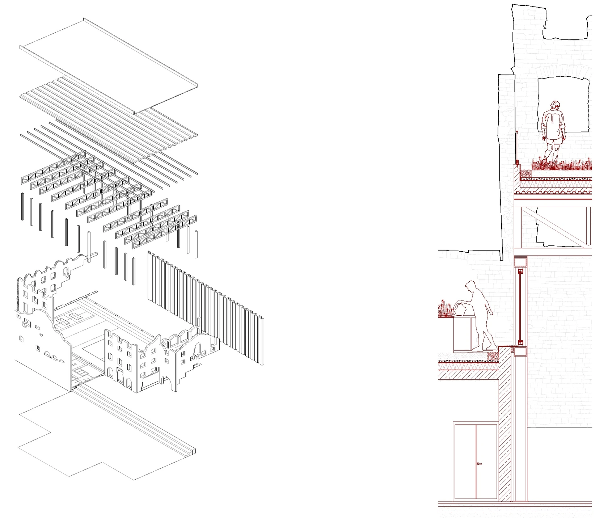
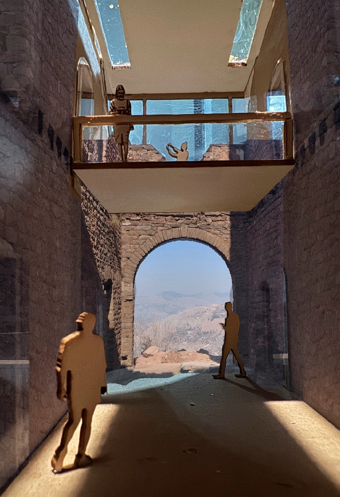

Masterarbeit · Weiterbauen im Bestand
(alter)native
Die ehemalige Murree-Brauerei wird zu einem Ort für das gemeinschaftliche Leben im Alltag. Leichte Einbauten machen die Ruine wieder nutzbar und lassen die Spuren ihrer Geschichte sichtbar.

- Ort
- Ghora Galli, Pakistan
- Kontext
- Hochschule München · Masterarbeit Architektur
- Semester
- Sommersemester 2026
Die Zeichnung
Die Zeichnungen zeigen, wie die neue Konstruktion an das erhaltene Steinmauerwerk anschließt.

Zeichnung vergrößernDer Raum
Der Blick durch den Steinbogen zeigt, wie sich die neue Erschließung in die Ruine einfügt.
